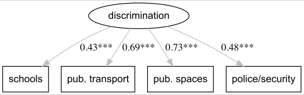
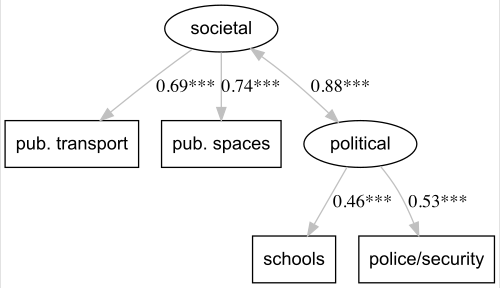
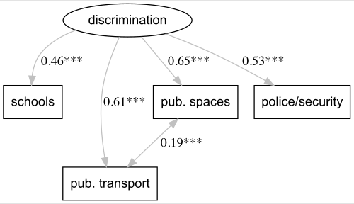
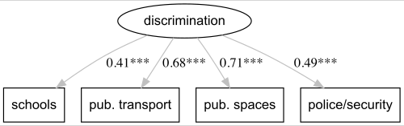
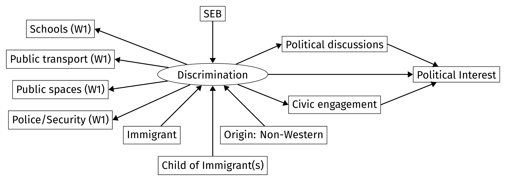
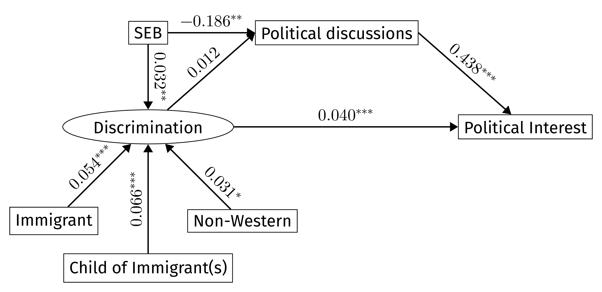
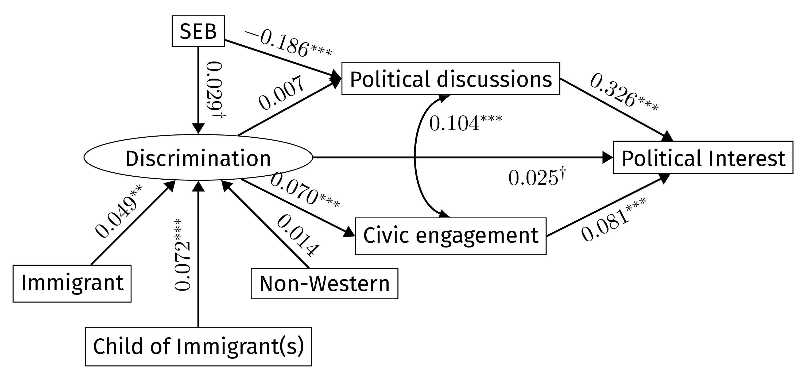

ECPR General Conference 2024 | Pathways to parity in political participation
Philipp Kleer & Simone Abendschön
Department of Political Science | Justus-Liebig-University Giessen
August 14, 2024
… and what we already know
democratic citizenship established in the early years, crucial for political participation (Deth et al., 2011; Easton & Dennis, 1969; Verba et al., 1995)
experiences of non-acceptance/ maltreatment affect youths’ future involvement profoundly (Flanagan et al., 2007)
the reality of discrimination presents a significant obstacle in nurturing political involvement (Arikan & Turkoglu, 2023; Flanagan et al., 2007; Just & Anderson, 2014)
discrimination could also lead to fight discrimination and engage in politics (Dawson, 1995)
What we used
a) direct on political interest
b) possible mediations via political discussions & civic engagement
… what we found in the data



| logl | AIC | BIC | \(\mathbf{\chi^2}\) | \(\mathbf{\nu}\) | pvalue | CFI | TLI | RMSEA | SRMR | |
|---|---|---|---|---|---|---|---|---|---|---|
| 1 Factor | -39898.75 | 79821.5 | 79912.62 | 61.695 | 2 | 0.000 | 0.993 | 0.980 | 0.045 | 0.013 |
| 2 Factor | -39873.05 | 79772.1 | 79870.81 | 10.295 | 1 | 0.001 | 0.999 | 0.994 | 0.024 | 0.004 |
| 1 Factor + err.corr. | -39873.05 | 79772.1 | 79870.81 | 10.295 | 1 | 0.001 | 0.999 | 0.994 | 0.024 | 0.004 |

| logl | AIC | BIC | \(\mathbf{\chi^2}\) | \(\mathbf{\nu}\) | pvalue | CFI | TLI | RMSEA | SRMR | |
|---|---|---|---|---|---|---|---|---|---|---|
| 1 Factor | -28170.30 | 56364.60 | 56451.76 | 48.391 | 2 | 0.000 | 0.992 | 0.977 | 0.047 | 0.013 |
| 2 Factor | -28151.87 | 56329.73 | 56424.15 | 11.522 | 1 | 0.001 | 0.998 | 0.990 | 0.032 | 0.006 |
| 1 Factor + err.corr. | -28151.87 | 56329.73 | 56424.15 | 11.522 | 1 | 0.001 | 0.998 | 0.990 | 0.032 | 0.006 |


| logl | AIC | BIC | \(\mathbf{\chi^2}\) | \(\mathbf{\nu}\) | pvalue | CFI | TLI | RMSEA | SRMR |
|---|---|---|---|---|---|---|---|---|---|
| -57567.67 | 115185.3 | 115377.0 | 218.327 | 26 | 0 | 0.985 | 0.977 | 0.022 | 0.014 |
| To | Coefficient | SE | 95% CI |
|---|---|---|---|
| Ind. Discr -> Pol. discuss -> Pol. interest | 0.0089 | 0.0083 | (-0.0074, 0.0252) |
| Ind. SEB -> Discr. -> Pol. discussion | 0.0013* | 0.0006 | (0.0001, 0.0024) |

| logl | AIC | BIC | \(\mathbf{\chi^2}\) | \(\mathbf{\nu}\) | pvalue | CFI | TLI | RMSEA | SRMR |
|---|---|---|---|---|---|---|---|---|---|
| -39303.72 | 78667.45 | 78878.59 | 216.144 | 33 | 0 | 0.969 | 0.955 | 0.026 | 0.017 |
| To | Coefficient | SE | 95% CI |
|---|---|---|---|
| Ind. Discr -> Pol. discuss -> Pol. interest | 0.0041 | 0.0084 | (-0.0123, 0.0206) |
| Ind. Discr. -> Civic Eng. -> Pol. interest | 0.0097*** | 0.0026 | (0.0047, 0.0148) |
| Ind. SEB -> Discr. -> Pol. discussion | 0.0002 | 0.0004 | (-0.0007, 0.0011) |
youth of immigration and from lower socio-economic background experienced more discrimination
Although discrimination itself is bad, experiencing it rather iniciates more involvement, especially via civic engagement.
discrimination does not lead to a higher frequency of political discussions
differences across countries and gender:
Please, shoot questions at me.
What we couldn’t fit into 12 minutes
| logl | AIC | BIC | \(\mathbf{\chi^2}\) | \(\mathbf{\nu}\) | pvalue | CFI | TLI | RMSEA | SRMR | |
|---|---|---|---|---|---|---|---|---|---|---|
| Theorized Model | -57798.23 | 115644.5 | 115828.5 | 679.456 | 27 | 0 | 0.944 | 0.919 | 0.039 | 0.030 |
| + SEB -> pol. discussion | -57567.67 | 115185.3 | 115377.0 | 218.327 | 26 | 0 | 0.985 | 0.977 | 0.022 | 0.014 |
| To | Coefficient | SE | 95% CI |
|---|---|---|---|
| Total Discr -> Pol. discuss -> Pol. interest | 0.0741*** | 0.0196 | (0.0356, 0.1125) |
| Total SEB -> Discr. -> Pol. discussion | -0.1854*** | 0.0085 | (-0.2020, -0.1687) |
| logl | AIC | BIC | \(\mathbf{\chi^2}\) | \(\mathbf{\nu}\) | pvalue | CFI | TLI | RMSEA | SRMR | |
|---|---|---|---|---|---|---|---|---|---|---|
| Theorized Model | -39509.85 | 79075.69 | 79272.76 | 628.386 | 35 | 0 | 0.900 | 0.860 | 0.045 | 0.033 |
| + SEB -> pol. discussion | -39303.72 | 78667.45 | 78878.59 | 216.144 | 33 | 0 | 0.969 | 0.955 | 0.026 | 0.017 |
| To | Coefficient | SE | 95% CI |
|---|---|---|---|
| Total Discr -> Pol. discuss -> Pol. interest | 0.0460\({\dagger}\) | 0.0254 | (-0.0038, 0.0958) |
| Total Ind. Discr. -> Civic Eng. -> Pol. interest | 0.0516* | 0.0255 | (0.0017, 0.1015) |
| Total SEB -> Discr. -> Pol. discussion | -0.1837*** | 0.0104 | (-0.2041, -0.1632) |
| logl | AIC | BIC | \(\mathbf{\chi^2}\) | \(\mathbf{\nu}\) | pvalue | CFI | TLI | RMSEA | SRMR | |
|---|---|---|---|---|---|---|---|---|---|---|
| Configural | -54293.13 | 108786.3 | 109553.0 | 426.292 | 104 | 0 | 0.975 | 0.963 | 0.028 | 0.021 |
| Metric | -54324.16 | 108830.3 | 109528.0 | 488.349 | 113 | 0 | 0.972 | 0.961 | 0.029 | 0.023 |
| Scalar | -54931.40 | 110014.8 | 110597.5 | 1702.831 | 128 | 0 | 0.873 | 0.845 | 0.056 | 0.046 |
| Partial Scalar (freed intercept political interest) | -54566.47 | 109290.9 | 109896.6 | 972.959 | 125 | 0 | 0.936 | 0.921 | 0.041 | 0.033 |
| Partial Scalar (+ freed intercept schools) | -54397.69 | 108959.4 | 109588.1 | 635.415 | 122 | 0 | 0.961 | 0.951 | 0.033 | 0.027 |
| Regression | -55036.19 | 110176.4 | 110575.1 | 1912.413 | 152 | 0 | 0.859 | 0.855 | 0.054 | 0.048 |
| Partial Regression (freed intercept political interest, schools) | -54457.67 | 109031.3 | 109476.0 | 755.364 | 146 | 0 | 0.955 | 0.951 | 0.033 | 0.031 |
| logl | AIC | BIC | \(\mathbf{\chi^2}\) | \(\mathbf{\nu}\) | pvalue | CFI | TLI | RMSEA | SRMR | |
|---|---|---|---|---|---|---|---|---|---|---|
| Configural | -56478.30 | 113056.6 | 113439.8 | 285.194 | 52 | 0 | 0.982 | 0.973 | 0.024 | 0.016 |
| Metric | -56510.14 | 113114.3 | 113474.5 | 348.885 | 55 | 0 | 0.977 | 0.968 | 0.026 | 0.019 |
| Scalar | -56753.26 | 113590.5 | 113912.4 | 835.120 | 60 | 0 | 0.940 | 0.922 | 0.041 | 0.028 |
| Partial Scalar (freed intercept police/security) | -56600.57 | 113287.1 | 113616.7 | 529.734 | 59 | 0 | 0.964 | 0.952 | 0.032 | 0.024 |
| Partial Scalar (+ freed intercept political interest) | -56544.13 | 113176.3 | 113513.5 | 416.862 | 58 | 0 | 0.972 | 0.963 | 0.028 | 0.021 |
| Regression | -56776.73 | 113621.5 | 113882.0 | 882.062 | 68 | 0 | 0.937 | 0.927 | 0.039 | 0.030 |
| Partial Regression (freed intercept political interest + freed intercept police/security) | -56566.49 | 113205.0 | 113480.9 | 461.578 | 66 | 0 | 0.969 | 0.964 | 0.028 | 0.023 |
| logl | AIC | BIC | \(\mathbf{\chi^2}\) | \(\mathbf{\nu}\) | pvalue | CFI | TLI | RMSEA | SRMR | |
|---|---|---|---|---|---|---|---|---|---|---|
| Configural | -36452.87 | 73145.74 | 73990.30 | 454.083 | 132 | 0 | 0.946 | 0.920 | 0.034 | 0.026 |
| Metric | -36469.78 | 73161.56 | 73942.78 | 487.900 | 141 | 0 | 0.944 | 0.922 | 0.034 | 0.027 |
| Scalar | -36883.27 | 73952.54 | 74607.08 | 1314.885 | 159 | 0 | 0.804 | 0.758 | 0.059 | 0.048 |
| Partial Scalar (freed intercept political interest) | -36722.18 | 73636.37 | 74312.02 | 992.706 | 156 | 0 | 0.860 | 0.824 | 0.050 | 0.041 |
| Partial Scalar (+ freed intercept schools) | -36638.12 | 73474.25 | 74171.01 | 824.586 | 153 | 0 | 0.888 | 0.856 | 0.046 | 0.038 |
| Partial Scalar (+ freed intercept civic engagement) | -36507.43 | 73218.86 | 73936.74 | 563.203 | 150 | 0 | 0.932 | 0.912 | 0.036 | 0.030 |
| Regression | -37017.96 | 74161.93 | 74605.32 | 1584.268 | 189 | 0 | 0.762 | 0.754 | 0.059 | 0.051 |
| Partial Regression (freed as in scalar) | -36568.80 | 73281.60 | 73788.34 | 685.942 | 180 | 0 | 0.917 | 0.910 | 0.037 | 0.035 |
| logl | AIC | BIC | \(\mathbf{\chi^2}\) | \(\mathbf{\nu}\) | pvalue | CFI | TLI | RMSEA | SRMR | |
|---|---|---|---|---|---|---|---|---|---|---|
| Configural | -38767.69 | 77655.39 | 78077.67 | 299.052 | 66 | 0 | 0.962 | 0.944 | 0.029 | 0.021 |
| Metric | -38794.50 | 77702.99 | 78104.16 | 352.652 | 69 | 0 | 0.955 | 0.936 | 0.031 | 0.023 |
| Scalar | -38972.83 | 78047.66 | 78406.60 | 709.325 | 75 | 0 | 0.896 | 0.865 | 0.045 | 0.032 |
| Partial Scalar (freed intercept police/security) | -38900.92 | 77905.84 | 78271.81 | 565.499 | 74 | 0 | 0.920 | 0.894 | 0.040 | 0.029 |
| Partial Scalar (+ freed intercept political interest) | -38841.04 | 77788.09 | 78161.10 | 445.753 | 73 | 0 | 0.940 | 0.919 | 0.035 | 0.026 |
| Partial Scalar (+ freed intercept schools) | -38810.46 | 77728.93 | 78108.98 | 384.593 | 72 | 0 | 0.950 | 0.932 | 0.032 | 0.024 |
| Regression | -38988.20 | 78058.40 | 78346.95 | 740.058 | 85 | 0 | 0.893 | 0.877 | 0.043 | 0.033 |
| Partial Regression (freed intercept police/security, political interest) | -38854.93 | 77795.86 | 78098.49 | 473.520 | 83 | 0 | 0.937 | 0.926 | 0.033 | 0.027 |
| Partial Regression (+ freed intercept schools) | -38824.55 | 77737.10 | 78046.77 | 412.758 | 82 | 0 | 0.947 | 0.937 | 0.031 | 0.026 |